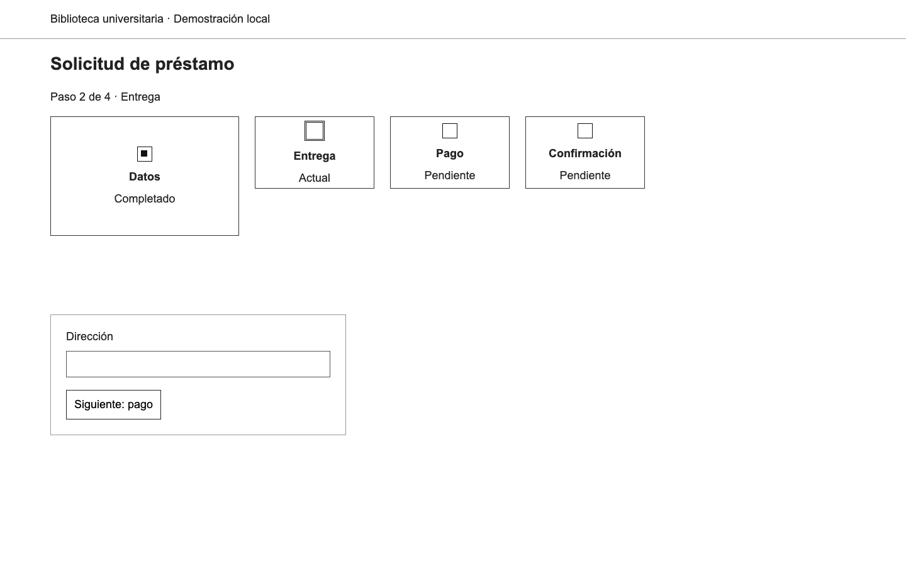
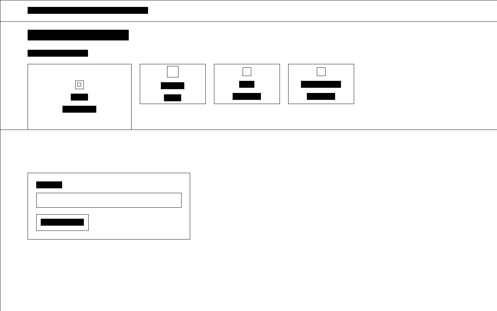
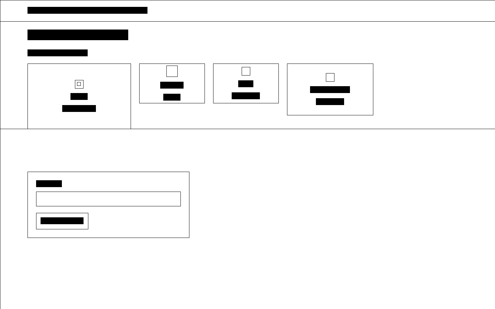
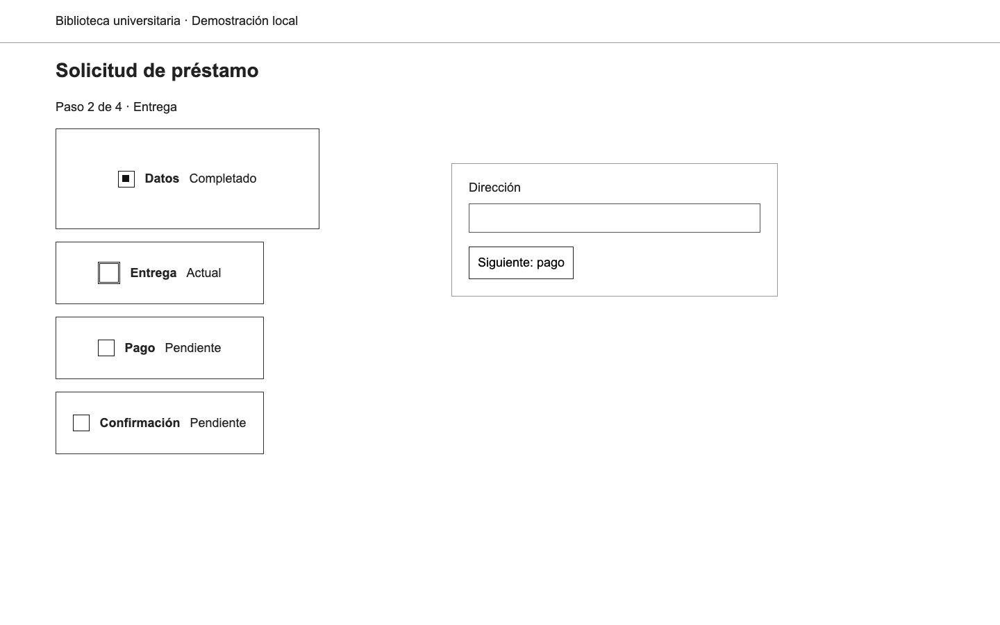
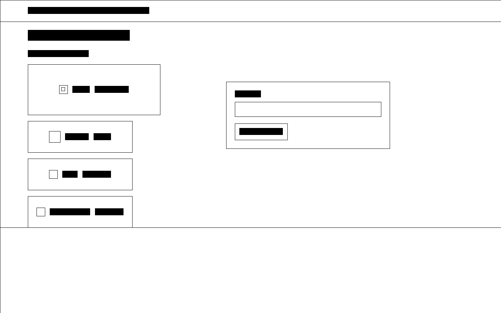
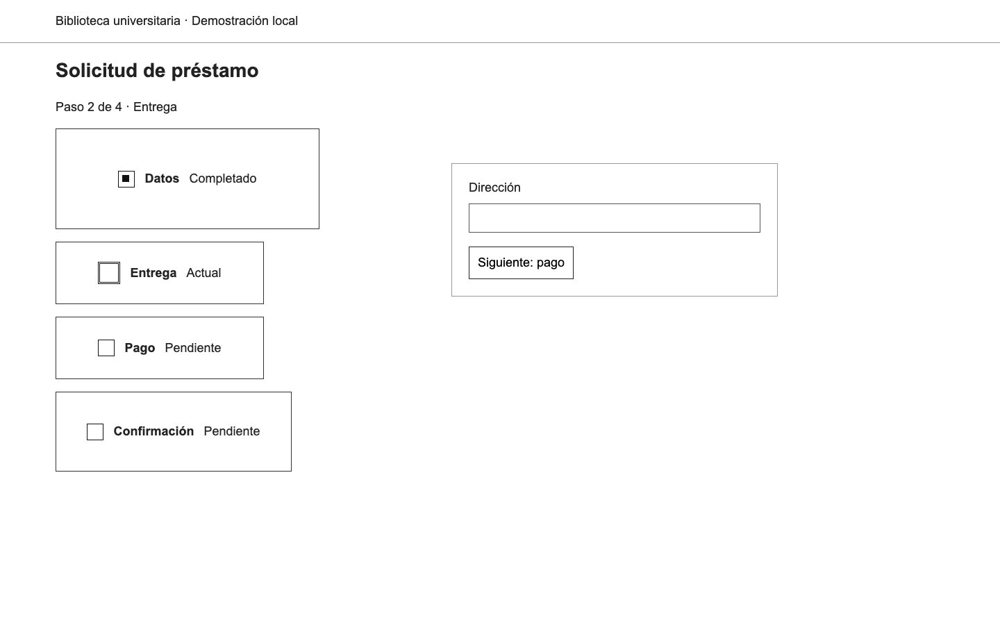
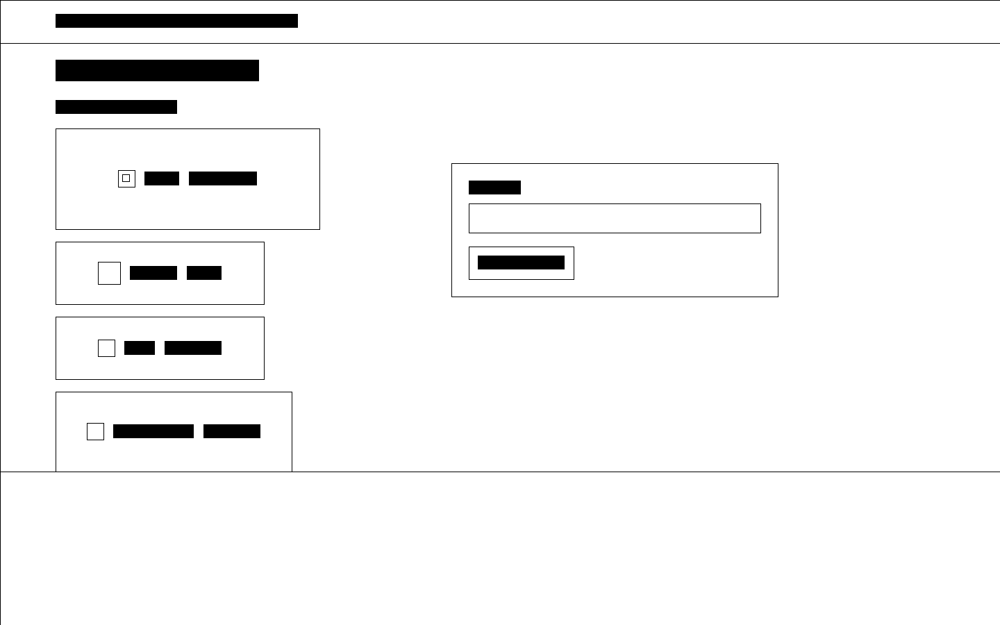

E01
P06 previo, sin evaluaciones recibidas


Expectativas de diseño propuestas antes de evaluar. E01 reutiliza la captura pendiente; E02/E03 y E04/E05 forman pares para distinguir 3 de 4. Las expectativas no se entregan al modelo.
P06 previo, sin evaluaciones recibidas
nuevo control horizontal


nuevo final horizontal diferenciado

nuevo control vertical


nuevo final vertical diferenciado

